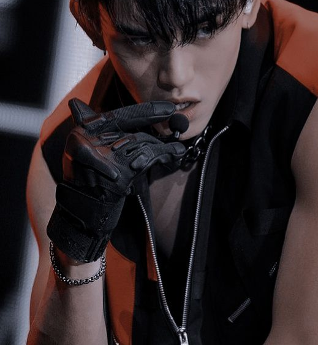
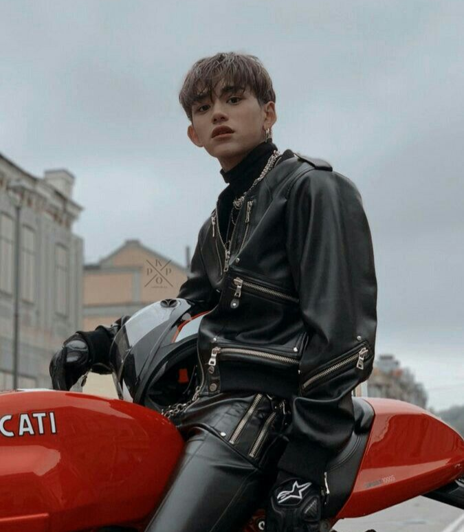

Accesorios para tu Moto
Encuentra los mejores accesorios para mejorar tu experiencia en moto.

Casco Deportivo
Protección y estilo en un solo diseño.
$4,500 MXN

Guantes Resistentes
Mayor agarre y seguridad en la conducción.
$2,500 MXN

Chaqueta Protectora
Comodidad y seguridad en cada viaje.
$6,700 MXN